On the erwin DM Scheduler Events Details screen, click Reverse Engineer.
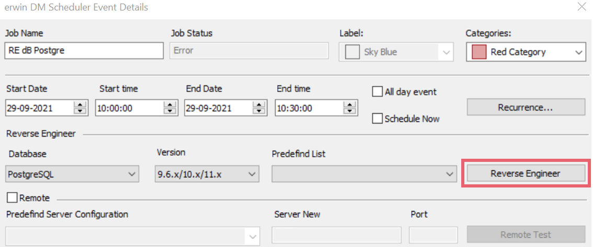
The Reverse Engineering Wizard appears.
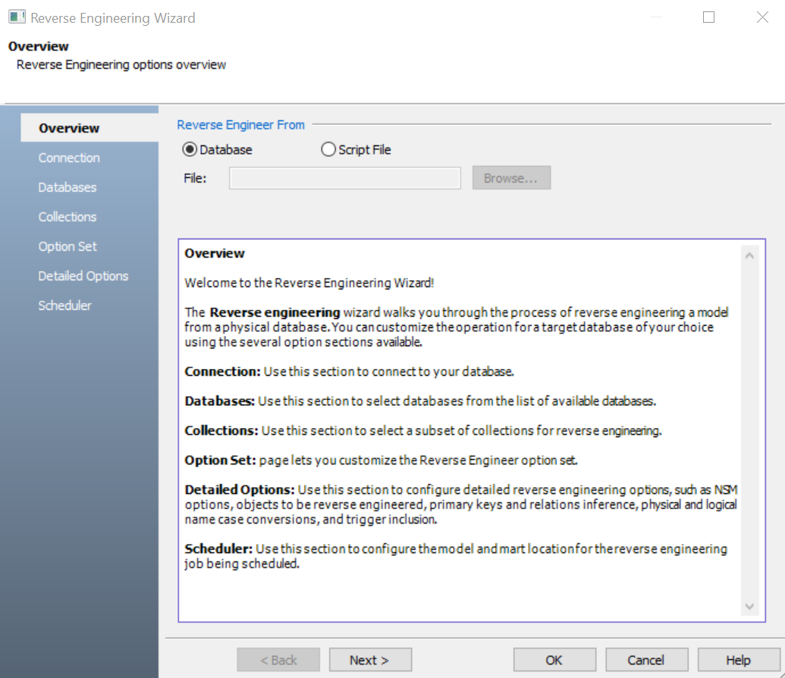
Click one of the following options:
-
Database: Use this option to reverse engineer a model from a database.
If you click Database, continue to step 5.
-
Script File: Use this option to reverse engineer a model from a script. Selecting this option enables the File field. Click Browse and select the a script file from your directory.
If you click Script File, go to step 8 below and ensure that Document Count or Document % is not set to zero (0).
Click Next.
The Connection tab appears.
The available connection options differ based on your database. For more information on database-specific connection parameters, refer to the Database Connection Parameters topic.
For example, the following image the connection to MongoDB database is established using a connection string.
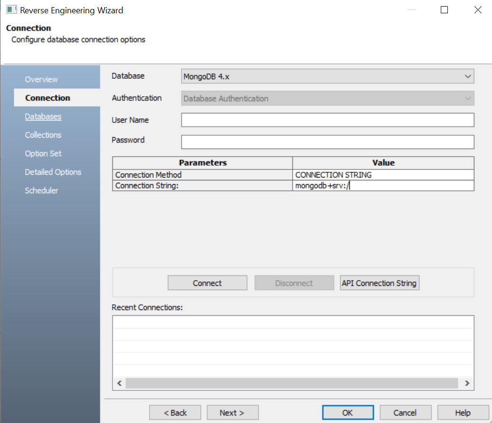
On a successful connection, your connection information is displayed under Recent Connections.
Click the API Connection String button to view the API connection string for your database. For more information, refer to the ISCPersistenceUnit::ReverseEngineer topic in the API Reference guide.
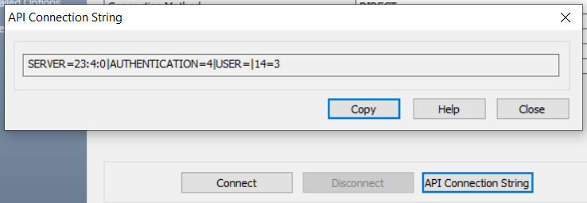
Click Next.
The Database tab appears. The available options differ based on your database. For more information on database-specific reverse engineering options, refer to the Reverse Engineering Options for Databases topic.
The Database section appears. It displays a list of available databases.
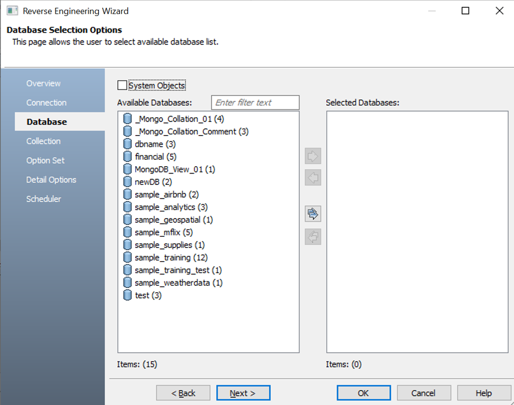
Under Available Databases, select the databases that you want to reverse engineer. Then, click  .
.
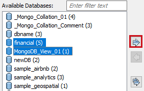
This moves the selected databases under Selected Databases.
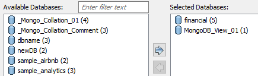
Click Next.
The Collection section appears. It displays a list of available collections in the selected.
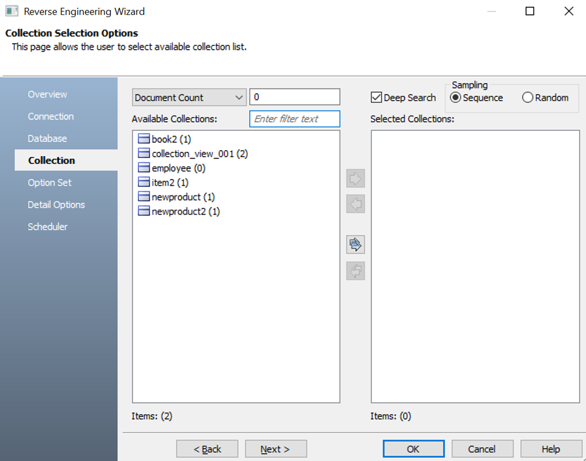
Use the following options:
-
Document Count/Document (%): Use this option to specify the number of documents or percentage of total records that the newly generated model schema would contain.
-
Deep Search: Use this option to specify whether the deep search algorithm is used to retrieve the right samples for schema generation.
-
Sampling: Use the Sequence or Random sampling methods to sample records in the selected collections. Sampling enables you to retrieve right estimates for accurate collection schema generation.
Under Available Collections, select the collections that you want to reverse engineer. Then, click .
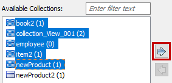
This moves the selected collections under Selected Collections.
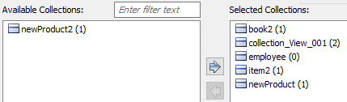
Click Next.
The Option Set tab appears. It displays the default option set. You can either use the default or a custom option set.
Click Next.
The Detailed Options tab appears. Set up appropriate options based on your requirement.
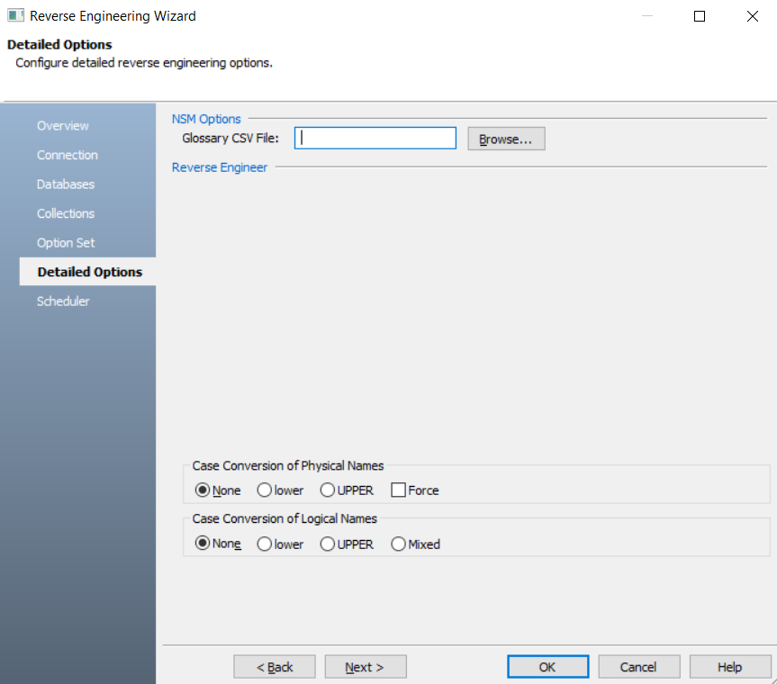
Click Next.
The Scheduler tab appears.
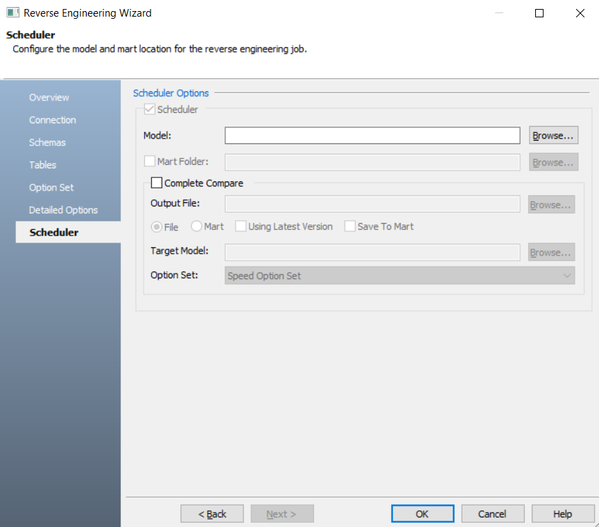
Configure appropriate scheduler options. Refer the following table:
Click OK.
The reverse engineering process starts.
Once the process is complete, based on your selections, a schema is generated, and a model is created.
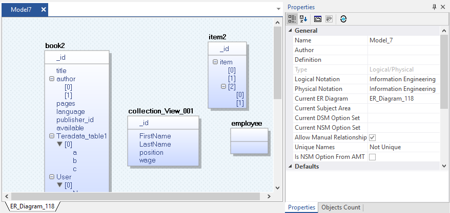